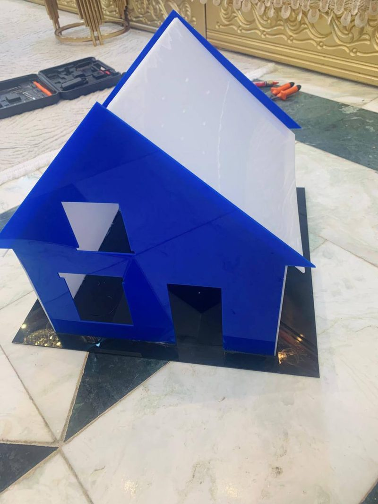
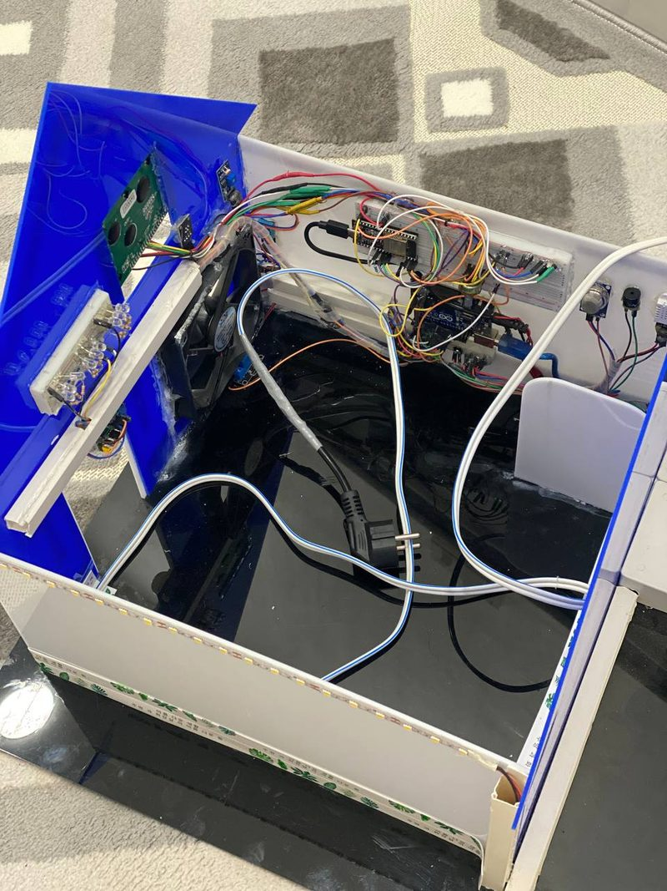
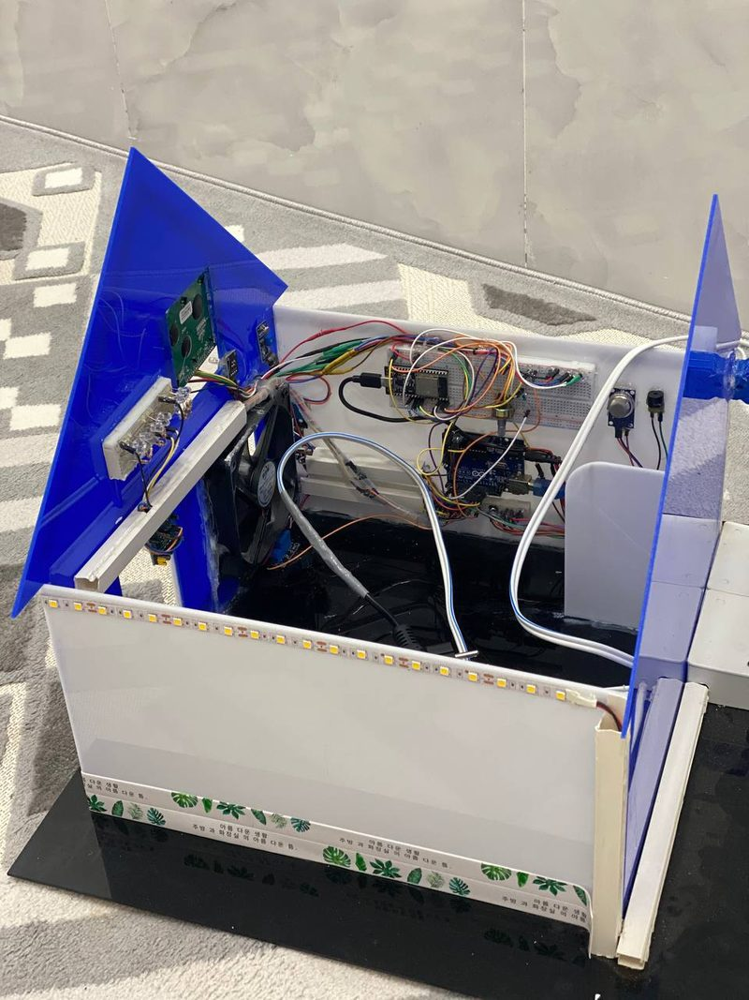
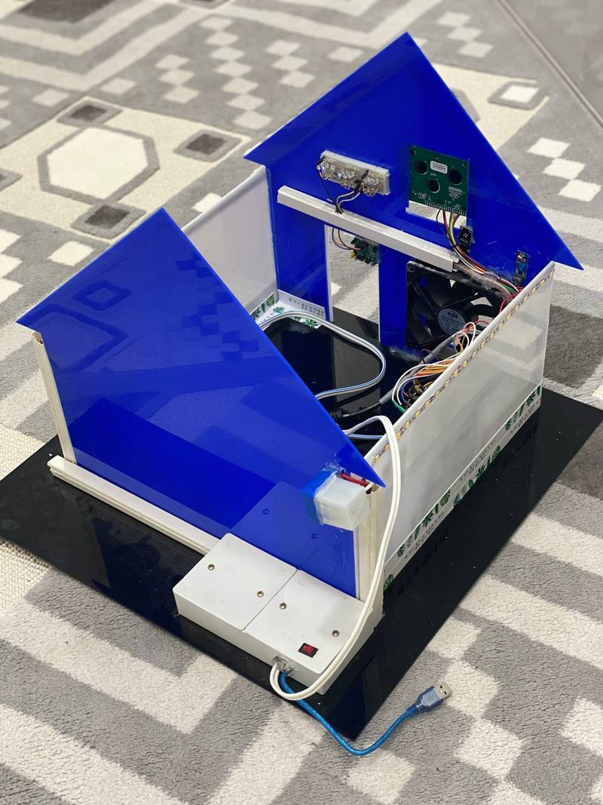

- 01
The idea
A campus that manages its own energy.
Universities keep growing: more students, more buildings, more lights and fans. Without control, energy is spent on empty rooms and air quality is left to chance. This project puts a small brain in every room: it senses what is happening, decides, and acts.
The model house stands for a campus building. Each thing it does has a direct meaning on a real campus:
On the modelThe fan→On a campusVentilation for lecture halls and laboratoriesOn the modelThe light→On a campusLighting that follows people, not the clockOn the modelThe gas alarm→On a campusEarly safety warning in labs and workshopsOn the modelWi-Fi and display→On a campusOne central view of every building's readings - 02
How it works
Sense. Decide. Act.
Sensors read the room, an Arduino board applies simple rules, and the room responds. A Wi-Fi module sends the readings out, so they can be watched from a distance.
SenseTemperature and humidity (DHT22), movement (PIR), light (LDR), smoke and flammable gas (MQ-2).DecideAn Arduino Uno compares each reading with a set limit, every two seconds.Act and showFan through a relay, light, buzzer, a 16×2 display, and Wi-Fi to send the data on.When The system Why Temperature above 30 °C, or humidity above 70 % Turns the fan on Comfort and air quality Gas level above 400 Sounds the buzzer and runs the fan to push the gas outside Safety Movement detected and the room is dark (light level below 300) Turns the light on Light only when someone is there The limits are starting values written into the code, ready to be tuned for each room.
- 03
Why it matters
Less waste. Better rooms. Better decisions.
A smart campus is more than a showcase. Run at scale, the same logic is designed to deliver real benefits:
Lower energy useAir conditioning, fans and lights run according to actual need, not all day.Lower costs and emissionsLess electricity means lower running costs and a smaller carbon footprint.Healthier roomsBetter air quality and thermal comfort in classrooms and laboratories, where students learn.Safer buildingsGas is detected early, the alarm sounds and the fan clears the air.Data for decisionsAccurate readings help management plan energy use, maintenance and infrastructure.Skills for graduatesProgramming, electronics, networking and data analysis, learned by building the real thing. - 04
Built by hand
Every wall, wire and line of code is theirs.
The students made the whole model themselves: the acrylic building, the wiring, the electronics and the program. It is 42 cm wide, 50 cm deep and 30 cm high, with a lift-off roof so every part can be seen, serviced and reprogrammed.
The finished building: live display on the facade, fan in the doorway. 
Lift-off roof 
Control boards 
LED strip and sensors 
Power and USB link Watch · 0:34
It starts as a pile of parts.
Sensor boards, relay modules, a transformer and metres of wire. This is the moment the team unpacks everything that will become the building's eyes, brain and muscles.
- Sensors
- Relays
- Transformer
- Wiring
Watch · 0:22
Then the building comes alive.
The LED strip glows along the walls and the indicator lights switch on. A model made entirely by hand, powered up for the first time.
- LED strip
- Indicator lights
- Acrylic body
- 05
The road ahead
From one model to a whole campus.
This project is the first step. The model proves the idea in miniature; the next steps take it into real buildings.
Step 1 · DoneThe model campusFive sensors, ventilation, lighting and safety control, a live display and Wi-Fi, built and wired by hand in an acrylic building.Step 2 · NextOne real buildingInstall the system in a real campus building, tune the limits on site, and log the data to measure the energy saved.Step 3 · LaterThe whole campusMany rooms on one network with a central dashboard, plus CO₂, noise and water sensors and renewable energy.